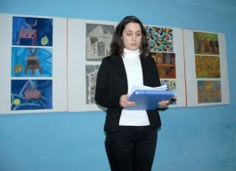
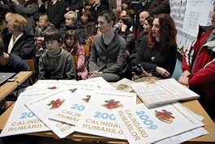
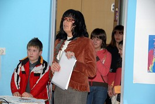
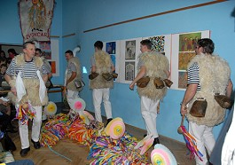

Šušnjevica - Učenici Osnovne škole Ivan Goran Kovačić iz Čepića, okupljeni u grupi izvannastavnih aktivnosti pod nazivom Mladi Istrorumunji, predvođeni voditeljicom Rominom Licul, predstavili su 29. siječnja u područnoj školi u Šušnjevici svoj "Calindaru rumarilor," kalendar na istrorumunskom jeziku. Kalendar s nazivima mjeseci i blagdana na istrorumunjskom plod je nastojanja škole da ovaj jezik, koji je danas sačuvan jedino među starijim žiteljima Šušnjevice, usadi u mlade naraštaje i tako ga sačuva i spasi od izumiranja.

"Naša je želja da područna škola u Šušnjevici u dogledno vrijeme postane kulturno edukativni muzej koji bi čuvao ovu vrijednu baštinu našeg zavičaja, posebno ovih žitelja," rekla je između ostalog rekla Mirela Vidak, ravnateljica OŠ Ivan Goran Kovačić u Čepiću, čiju je ideju podržao i Josip Kontuš, načelnik Općine Kršan, naglasivši da to Općina Kršan ima u planu ostvariti do kraja 2010. godine. "Zasad smo kao informativni punkt renovirali prostor u središtu sela i on se trenutno oprema. Sljedeći korak bit će dodatna obnova školske zgrade, tako da će na katu biti učionice, a u prizemlju mali muzej," kazao je Kontuš.

Među brojnim gostima u školskoj učionici koja je bila premala da primi sve zainteresirane, našli su se Goran Filipi, redoviti profesor Sveučilišta u Puli, autor Istrorumunjskog - lingvističkog atlasa, Lidija Nikočević, ravnateljica Etnografskog muzeja Istre u Pazinu, Ervino Curtis, predsjednik tršćanskog društva talijansko-istro-rumunjskog prijateljstva Decebal. Posebno inspirativno i zanimljivo bilo je predavanje Kristine Cvjetković, mlade apsolventice Filozofskog fakulteta u Splitu, na temu istrorumunjski mikro jezik u Globalnom selu, koje je prezentirano na Međunarodnoj konferenciji mladih Slavista u Pragu. Predstavljanju istrorumunjskog kalandara prisustvovali su i Boris Marmilić, predsjednik Mjesnog odbora Žejane i Aleksandar Šneler, član Izvršnog odbora Folklornog društva Žejanski zvončari. Inače, Žejanci govore sjevernom verzijom ovog jezika.

U predstavljanju kalendara sudjelovali su učenici: Elena Fajman, Nina Maria Laginja, Mateo Jurman, Andrej Radola, Lara Dobrić, Matea Rabar, Paolo Novaković, Samanta Šturbej, Josip Brajuha, Anthony Jurman i Andy Taletović.

U zabavnom programu vrlo dojmljiv, popraćen burnim pljeskom, bio je i nastup dječje grupe KUD-a "Ivan Fonović Zlatela" Kršan, a posebna atrakcija bio je originalan nastup Žejanskih zvončara.
Divna Knežević | Foto: Roberto Matković
January 31, 2009
© 2009 Novi Folj